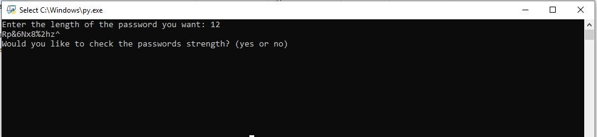
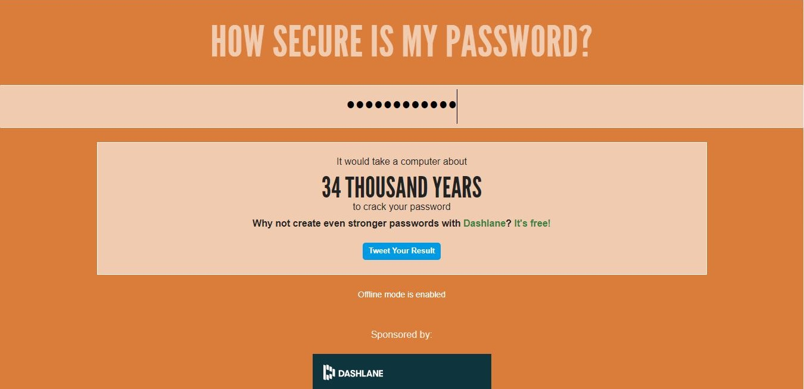

I worked on different methods of creating this application and even in different languages including Java and Visual Basic.NET. I decided to work it out fully in Python recently. I decided not to work on a GUI for this application and make it strictly
text-based. The code requires the user to input an integer to distinguish the length of the password. After submitting the length, the user is presented with a randomly generated string of characters. The user is then asked if they would
like to check the strength of the password. If the user decides to check the strength, a new tab opens up to the website
How Secure is My Password
and the password is added to the clipboard so the user only
has to use the keyboard command, Ctrl+V, and
the website will give a rough estimate on how long it would
take to crack the password.

I used Python's random, webbrowser, and pyperclip modules for this application. The random module is used to generate the password from a key of characters the length of the users request. I used the webbrowser module to open a specific website that is designed to check the strength and complexity of a password or string. I found the pyperclip module when researching a way to quickly paste the string into the website but storing the string into the systems clipboard. If this program interests you, visit my github and download the code.
